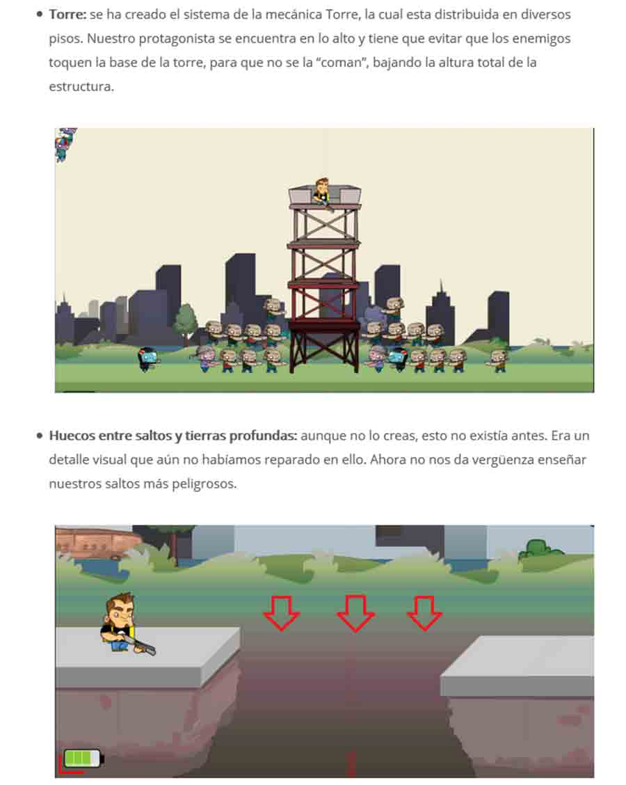

Videojuego 2D de temática Zombie, que aúna géneros Shoot' em up y Runner. Se ha desarrollado a lo largo de 8 meses como trabajo de final de carrera de manera solitaria, con el motor Unity3D, obteniendo una calificación final de Sobresaliente.
DEMO | El Especialista
He llevado a cabo todos los apartados:
Además, se ha llevado todo el proceso de desarrollo mediante la metodología Scrumban. Cada Sprint resultante se ha publicado en www.diariodeunvideojuego.com, donde he explicado cada tarea llevada en el videojuego, a nivel técnico como conceptual, así como publicaciones con artwork y multimedia inéditos.

“Nuestro protagonista es un especialista de cine de
películas de dudosa calidad (Serie B) pero mayor su deseo real es
convertirse en un actor de cine.
Se encuentra grabando una escena de película de zombies. Todo
transcurre con normalidad hasta que descubre que por algún
motivo, los extras de la película, los zombies, se han convertido
en zombies reales. Su objetivo es sobrevivir, mientras se hace un
hueco en Hollywood.”
Nota: El videojuego aunque se encuentra en una versión estable, está principalmente orientado hacia la Defensa del TFG,
que ya tuvo lugar.
Por lo tanto, no está desarrollado al 100%, pero se prevee retomar el proyecto en un futuro,
puliendo aspectos como el motor de físicas, control del personaje, diseño de niveles, etc.
Para descargar la demo en Android, que es para la plataforma en la se ideó la mecánica del juego, puedes hacerlo desde este enlace.
Todo el código se encuentra en GitHub de manera pública, por lo que os invito a que le echeis un ojo al código fuente, a los recursos o al videojuego en general en este enlace.
Para más información, le invito a visitar www.diariodeunvideojuego.com, donde explico los entresijos del proyecto. También dejo a su disposición la documentación final del videojuego, con más de 140 páginas en formato .pdf.
Por último, puede visitar parte del artwork de este proyecto a través de Behance, en este enlace.